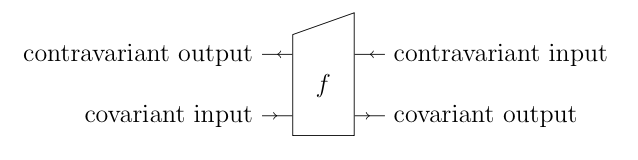

Even I think open games are hard to understand, and I invented them.
(Perhaps this is just me though. Grothendieck wrote “The very idea of scheme is of infantile simplicity — so simple, so humble, that no one before me thought of stooping so low.” [Grothendieck, Récoltes et Samailles, translated by Colin McLarty] So simple, in fact, that it took me years before I understood the definition of a scheme.)
Here I will give the best starting-out intuition I can give for open games, based on a few years of giving research talks consisting of three-quarters introduction. I’ll make no attempt to explain how they work — for that, section 2 of my thesis is still the best thing.
Like quantum mechanics, it is easier to explain the syntax of open games than the semantics. An open game is a box with 4 sorts of connectors:

In this diagram there is an arrow of time, from left to right. So there is information that flows forwards like good, honest information, and some weird information that somehow seems to go backwards. (The technical terms covariant and contravariant mean just this. I will keep using those terms to refer to the 4 ports, for lack of better names, so if in doubt, keep scrolling back up to this diagram.)
We build open games compositionally, which means we start with some atomic, indecomposable open games (our Lego pieces), and plug them together by putting them in a diagram together and joining up wires (subject to some caveats that I won’t go into here). For example, there is an atomic open game that represents a single decision made by a player.
Our open game contains some number of players, perhaps one, or two, or zero, or infinitely many. Suppose there is some information flowing forwards, which enters our open game via the “covariant input” port. This is information which the players inside the open game can potentially observe. The open game can split up and process this information before handing it to the players. The players then do some strategic reasoning and use their observation to choose moves. The open game takes these choices, perhaps does some more information processing, and then outputs it on the “covaraiant output” port.
If this port has been plugged into another open game’s input port in a diagram, this information becomes the input to that open game.
Every I just said is straightforward (information processing really means applying functions to inputs), with the exception of the part about strategic reasoning. This means that players are acting to optimise something — their payoff — and moreover they are optimising while reasoning mutually and circularly about what each other will do. (The keyword here is Nash equilibrium.) Allowing this second part to happen between players in different components of a diagram is, it’s fair to say, the hard part, and is the big innovation that open games make over earlier and simpler theories. But I’m going to ignore that, and focus on the first part.
If the players are optimising, they need to have something to optimise. If you change the thing they are optimising, the actual choices they make, which determines the behaviour of the open game, will change. One of the hardest things to intuit is that an open game doesn’t fully determine its own payoffs — they are external, just as much as the information that was inputted at the beginning. This is where the “contravariant input” port comes in.
After the open game outputs something on the covariant output port, that information is processed by the environment. This may simply be a utility function, but it could also involve other players doing strategic reasoning. The resulting information about utilities is returned on the contravariant input port. The open game then processes this information and distributes it to its players. Then the players act in the first place by making choices that optimise the resulting value.
The point from the beginning was to have players acting to bring about some future aim (this is Aristotle’s telos, which is fundamental in social science). It’s a non-obvious consequence, which still slightly blows my mind, that this is mathematically equivalent to information flowing backwards in time in any meaningful sense.
The remaining “contravariant output” port completes the symmetry and makes everything compose. Just as our open game might contain players and the future environment is the utility function, so we might be the utility function, and all the players are in the past environment. In this case we return utility to the past via the contravariant output port, and players in the past will reason teleologically about us.
The simplest example where all four ports get used in a nontrivial way is in a stage decision that we infinitely repeat with discounted utilities (such as a Markov decision process, although being stochastic isn’t the point here). The decision maker in a stage observes some state, and makes a choice, which causes the state to change for the next stage. We get given some utility for this choice, which is the infinite discounted sum of utilities from all future stages. We take this, discount it one additional time, and add it to the utility from this stage. The decision maker in this stage optimises this value, but it is also passed backwards, where it becomes the future utility for the previous stage.